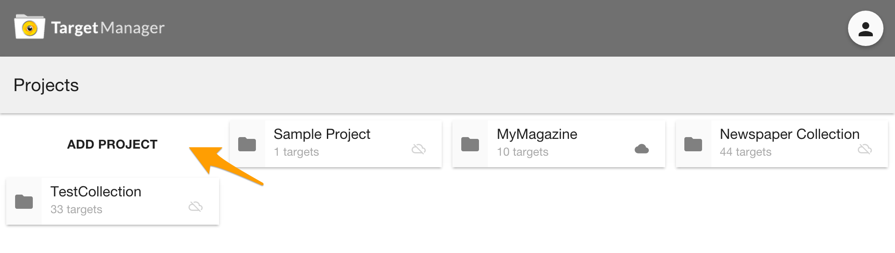
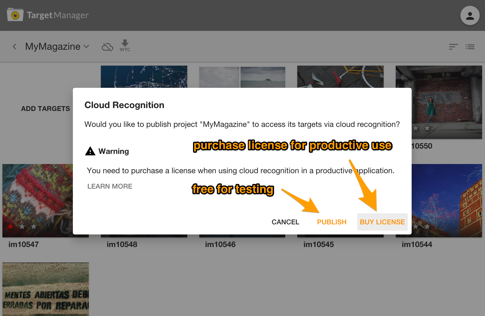
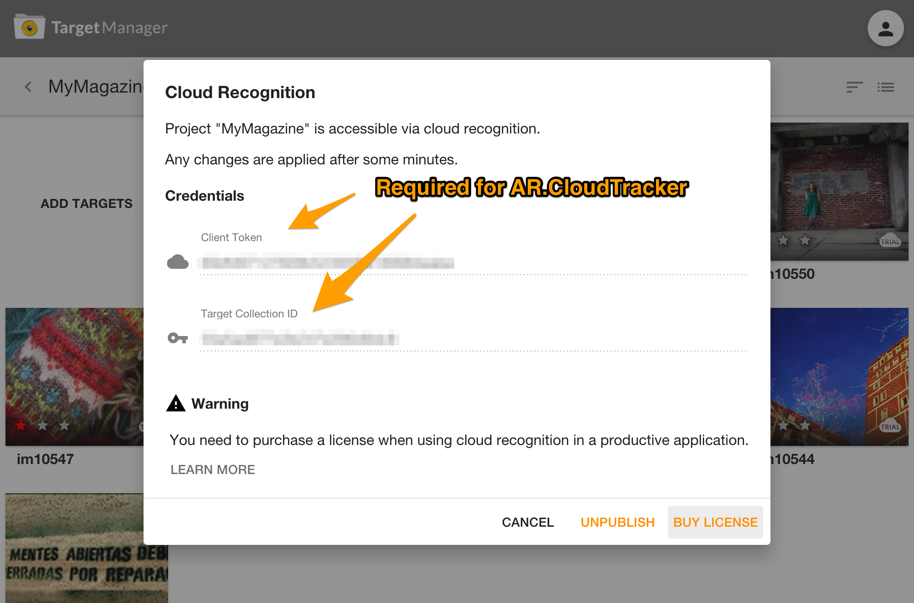

Target Management
Image Targets
This guide gives you an overview of how to create a target collection that you can use to detect and track images within your augmented reality experience.
In general, the conversion can be done via four different tools:
- Wikitude Studio: A browser based tool to convert your images to a WTC file. You can find the tool under: https://studio.wikitude.com. You need your free developer account to log-in. This tool is described in more detail further below.
- WTC Editor within Unity Editor: The Wikitude Unity plugin installs a WTC Editor as an extension of the Unity Editor. Unity developers can manage all their targets and target collections directly within Unity Editor. Please consult the Unity documentation for more details.
- Wikitude Studio API: The Studio API provides a RESTful API to upload target images and convert them to WTC files. Read more details in the section about Studio API
- Targets Enterprise Script: A binary shell script available for Mac OS X and Linux converting images to target collections. Pleases contact Wikitude Sales team for technical requirements and pricing.
Wikitude Studio
Add a project
- Open https://studio.wikitude.com and login with your Wikitude developer account
- Add a new project to your project collection

Add target images
- Enter an existing project
- Add new target images to the project either by clicking on
Add Targetsor drag & drop them on the empty area. Supported file formats include PNG and JPEG. If you are using PNG images, please make sure that it does not contain any transparent pixels, only solid colored images are supported.

- When uploading a target the file name is used as
target name. It identifies a target in your AR experience. If thetarget nameis not completely visible, hover over it to reveal the full name or double-click the target to enter edit-mode.
If you add your own target images you need the target name to use them in your AR experience
Wikitude.ImageTrackable.
Star Rating
- 0 stars: Not suitable for tracking. This target image cannot be tracked because it lacks textured features with high local contrast. Please consider choosing another target image.
- 1 star: Limited tracking ability. This target image provides basic tracking performance in good lighting conditions. Please consider improving the image
- 2 stars: Good tracking ability. This target image will track well in most conditions.
- 3 stars: Very good tracking ability. This target image will track very well in most conditions.
General advice for reference images
- Good image characteristics:
- Diversely textured image with high local contrast
- Bad image characteristics:
- Large areas with solid color or smooth color transitions
- Repetitive patterns
- Logos, signs
Create a WTC file
AR.TargetCollectionResourceWTC (Wikitude Target Collection) file which contains all information of the targets that should be recognized. Enter the project you need the file for and click the WTC icon in the toolbar.

- Select the Wikitude SDK version you're using and click Generate to trigger the creation of the WTC file. You will be notified via e-mail once the file is available for download.

Use project's WTC file in your app
Look at one of the image recognition examples or refer to the relevant reference for instructions on how to use the created target collection for augmentations in your ARchitect Worlds.
Image Targets for Cloud Recognition
Any existing project may also be published to the Cloud to make it accessible for AR.CloudRecognitionService.
Click the Cloud icon in the toolbar for more details.

Cloud Recognition is available for free in your testing process but you must purchase a license for productive use. Learn more

Once a project is published it is accessible via Wikitude SDK using 'Client Token' and 'Target Collection ID' (compare AR.CloudRecognitionService)

Hints
You may unpublish a project at any time but be aware that this action has an immediate effect on your application(s) making use of the credentials.
Metadata in the 'Edit Target' dialog is solely relevant for Cloud Recognition whereat Physical Height is relevant for the distanceToTarget feature and is required for Hololens projects.
Leave Physical Height empty if you do not use the distanceToTarget feature of
AR.ImageTrackable. Note it is mandatory for Hololens projects.The Metadata field is very useful. It allows you to attach JSON data to a target. That way you can define any kind of additional data and react to it dynamically in the SDK to e.g. let a button refer to a details page which is defined in the Metadata JSON.

Physical Height for Image Targets
For several features of the Wikitude SDK it is necessary to know the actual physical size of the Image target that is recognized. This information is used in
- Distance to target calculation
- Calibrated wearable devices like Epson BT series or Hololens
The Wikitude SDK only requires the actual height of the target image as information. The width of the actual image will be determined automatically.
There are three ways to provide that information to the Wikitude SDK
- Using Wikitude Studio
- Using the JavaScript API
- Using Unity WTC Editor
Setting physical target height using Wikitude Studio
Wikitude Studio is the universal way to add target height information. The tool allows adding the value of each image. The height information (physical target height) is then stored as part of the Image Target Collection (.wtc) and will be then automatically applied in the SDK.
- Add a target image
- Click
Properties - Add the value in the properties dialog
- Click Save
- Export as .wtc file
Setting physical target height using JavaScript API
The JavaScript API allows you to set the value for target images dynamically using the physicalTargetImageHeights option of the ImageTracker.
Setting physical target height using Unity WTC Editor
The WTC Editor included in the Unity Plugin of the Wikitude SDK also includes an option to set the physical target height (Target Height), which then stores the value into the .wtc file.

Object Targets
The object recognition feature in the Wikitude SDK works in a similar way than image recognition. It tries to find and match a pre-created reference in the live camera image. This pre-created reference is called Object Target. Sometimes we refer to it as a map as it is a pre-recorded SLAM map. Starting with version 8.0 of the Wikitude SDK, Object Targets can be created using videos or images (preferred) as source material. The source material is converted into a Wikitude Object Target Collection, which is stored as .wto file.
The standard process looks like the following:
- Collect source material: Create a video of the object or take images of the object
- Convert the source material into a Wikitude Object Target Collection (
.wto) - Use the
.wtofile in your app project.
In the following chapters, we describe video-based and image-based methods in more detail.
Image-based conversion (recommended)
Starting with version 8.0 of the Wikitude SDK, Object Targets can be generated from a set of images, instead of a single video. This approach has several advantages over the video-based conversion. For that, we recommend image-based conversion as the preferred method. It will always produce better results compared to the video-based conversion.
- The approach itself generates more accurate Object Targets
- The resolution of the input can be a lot higher compared to videos, which leads to more accurate results
- Images are easier to create from difficult angles
- You can add images from different backgrounds of the same object to increase recognition accuracy
- Object Targets can be extended with additional images to cover additional areas of the object
Take images of your object
The first step is to collect images from your object. This step is essential, as the source material will determine the quality of your Object Target. In general, it does not matter where the images originate from - either manually taken or generated and rendered in a 3D/CAD software.
Please refer to this guide for a detailed list of recommendations which images to use.
Convert images into Object Target Collection
There are two ways to convert your images into an Object Target Collection
- Use Studio web front-end
- Use RESTful APIs of the Studio APIs
Using Wikitude Studio
You might have used Studio already when working with Image Targets. Wikitude Studio is a free web-tool that helps you manage your Targets that are used in combination with the Wikitude SDK.
- Log-in to Wikitude Studio with your Wikitude developer account
- Create Project for Object Targets by selecting
Objectas the type for the new project Select the appropriate SDK version number in the field
SDK version. To use image-based conversion you have to set this to8.0or higherEnter the project
- Add a new Object Target and
Upload the set of images you want to use.
Select recording device or FOV - For creating the Object Target file the service needs to know, which device the images were taken on. The relevant piece of information is the Field of View or FoV of the camera, which tells how much a camera can see. Wikitude provides a list of common devices, where this value is already known. Either select the device or manually enter this value under the option
Custom- When you enter the FoV manually, make sure you enter the horizontal FoV. Vendors tend to show-off their devices with a combined diagonal FoV, which is the largest value. Do not use diagonal FoV but only horizontal FoV.
Automatic detection of FoV value: For image-based conversion the service will try to identify automatically the FoV value of every image that you upload. It is doing so by reading out EXIF data that are stored together with your JPEG images. In case either one of the the following EXIF properties is set correctly, the conversion will use this value, no matter which value you provided in the web interface.
35mm equivalentfocal plane resolution in x,focal plane resolution in yandfocal plane resolution unit

Wait for conversion to be finished. You will also be notified via email once the process has finished.
Download
.wtofile and embed it into your application (see the sample for details how to use it.)
Video-based conversion (deprecated)
Create a video of your object
This part is essential, as the Object Target can only be as good as the source video material. You can shoot videos on your own or have them generated as part of your 3D/CAD modeling software. Supported video formats are
- mp4
- mov
Please refer to this guide for an optimal video
Convert video into Object Target Collection
There are two ways to convert a video into an Object Target Collection
- Use Studio web front-end
- Use RESTful APIs of the Cloud Recognition Manager API
Using Studio
You might have used Wikitude Studio already when working with Image Targets. Wikitude Studio is a free web-tool that helps you manage your Targets that are used in combination with the Wikitude SDK.
- Log-in to Wikitude Studio with your Wikitude developer account
- Create Project for Object Targets by selecting
Objectas the type for the new project
- Enter the project
- Add a new Object Target and
- Upload a video from the object (see the previous chapter)
- Select recording device or FOV - For creating the Object Target file the service needs to know, which device the video was taken on. The relevant piece of information is the Field of View or FoV of the camera, which tells how much a camera can see. Wikitude provides a list of common devices, where this value is already known. Either select the device or manually enter this value under the option
Custom- When you enter the FoV manually, make sure you enter the horizontal FoV. Vendors tend to show-off their devices with a combined diagonal FoV, which is the largest value. Do not use diagonal FoV but only horizontal FoV.
Wait for conversion to be finished - the service is performing several runs in the background to find the best possible configuration for your video. The conversion will minimum take 3-times the video run length. So a 50 seconds video will take minimum take nearly 3 minutes to finish. Depending on the current load, this can also take longer. You will be notified via email once the process has finished.
Download
.wtofile and embed it into your application (see the sample for details how to use it.)
Using Studio API
Wikitude Studio can also be accessed through a RESTful API - which is called Studio API.